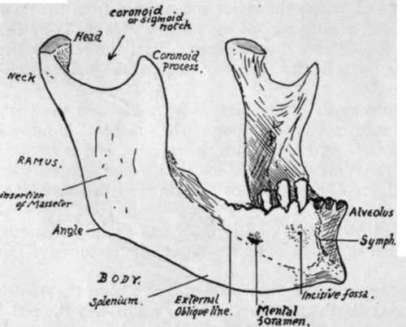

Lower Jaw Or Mandible
Description
This section is from the book "The Anatomy Of The Human Skeleton", by J. Ernest Frazer. Also available from Amazon: The anatomy of the human skeleton.
Lower Jaw Or Mandible
The only bone in the skull (with the exception of the tympanic ossicles) that is capable of separate movement : it carries the teeth opposing those of the upper jaw, gives insertion to the muscles of mastication, and origin to muscles of the tongue and floor of mouth and some muscles of expression.
It consists of two halves which are strongly joined in the middle line at the symphysis. Each half has a ramus and a body, joined at an angle that varies with age and dentition. The term angle of the jaw, however, is applied to the prominence formed by the junction of the lower border of the body with the back margin of the ramus.
* This is rare, but may occur through a suture which divides the bone horizontally into an upper larger) and lower (smaller) part.
The ramus ends above in two processes-the coronoid process in front and the articular head behind, supported by the narrower neck. The two processes are separated by the coronoid or sigmoid notch. The front margin of the ramus is sharp, whereas the posterior margin is blunt and rounded. The outer surface is roughened by the insertion of the Masseter. On the inner side it presents (Fig. 202) the inferior dental foramen," whose inner lip is prolonged forward and upward into the lingula : leading downward and forward from the foramen toward the body is the mylo-hyoid groove. A rough area below and behind the foramen marks the insertion of the Internal Pterygoid.
The body has a thick rounded lower part or splenium supporting the alveolar portion, which contains the teeth. On the inner side is the continuation of the mylo-hyoid groove, and above this the mylo-hyoid riUge or internal oblique line, for attachment of Mylohyoid (Fig. 202).
Fig. 01.-Mandible from the front and right side.
' Below the back part of these is the submaxillary fossa, and above their front part is the sublingual fossa : these are in relation with the corresponding glands. In front of the submaxillary fossa, and below the front part of the mylo-hyoid ridge, is a digastric depression or fossa for anterior belly of Digastric, which may, however, present itself in the form of a slightly elevated roughness. The mylo-hyoid line on each side nearly reaches the symphysis, and, above its level and on each side of the symphysis, are the genial tubercles for Genio-hyoids and Genio-glossi : these are described as forming two pairs, upper and lower, but usually it is difficult to distinguish them in this way, and there may be four tubercles, or a pair of them, or a vertical ridge representing them more or less fused.
On its outer aspect the body presents, from before backward, the vertical ridge of the symphysis, ending below in the mental protuberance, the incisive fossa, the mental foramen, and the external oblique line, leading upwards and backwards to become continuous with the front edge of the coronoid process.
The body of the bone is mainly concerned with the support of the structures in the mouth.
The Mylo-hyoid forms the muscular floor of the mouth, and thus the mylo-hyoid ridge or internal oblique line can be taken to divide the inner surface of the body of the bone into an upper (or buccal) area and a lower (or cervical) portion. These two ' parts can only come into relation with structures that lie on the corresponding surfaces of the Mylo-hyoid : thus the continuation of the ridge forward would pass below the genial tubercles, because these are for " buccal " structures.
Owing to the obliquity of its line of origin the mylo-hyoid muscle, passing to the body of the hyoid, has its posterior fibres and " free edge " more vertical than horizontal, whereas its front fibres are horizontal. The Genio-hyoids lie on these front fibres, supporting the Genio-glossi, and the sublingual gland lies further out and comes into contact with the bone. Thus we have the sublingual fossa outside the genial tubercles and above the mylo hyoid ridge, and the mucous membrane, which covers the alveolar part of the bone, and turns in to form the floor of the mouth, is separated by the gland from the muscle here.
But the submaxillary gland comes into relation with the bone in a different way. Its " deep " part lies further back than the sublingual, up against the side of the tongue (Hyo-glossus), but here the longer and more vertical fibres of the mylo-hyoid are between it and the bone, so that the two are not in contact ; but this portion of the gland is continuous round the free edge of the muscle with the " superficial part," which is situated in the angle between the mylo-hyoid and the jaw (Fig. 203). Thus, although the deep part of the gland does not touch the " buccal " part of the bone, the superficial part comes into relation with the " cervical " portion, therefore below the Mylo-hyoid ridge. This pjece of the gland lies in the digastric triangle, behind the anterior belly of the Digastric, so that the insertion of this muscle is further forward than the submaxillary fossa, but not on the symphysis.
Behind the position of the submaxillary fossa the gland extends back towards the angle of the jaw : it is still under cover of the bone, but is separated from it here by the lower part of the insertion of the Internal Pterygoid.
On the outer surface (Fig. 204) the alveolus is covered by mucous membrane, which is reflected from the jaw on to the cheeks and lip. Thus the membrane-covered surface extends to the origin of the Buccinator in the cheek region and is bounded in the region of the lip by the origin of muscles running up to the Orbicularis oris : these are the Depressor anguli oris below and behind the mental foramen, and the Depressor labii inferioris in front of this. Further forward, but not shown in the figure, the lower • incisive slip of the Orbicularis arises from the incisive fossa. The muscle shown in the figure as arising under the mucous membrane in this fossa has its fibres directed down to be inserted into the skin of the chin ; therefore when it contracts it pulls up the skin and so lifts the lip, and is therefore termed Levator menti or Lev. lab. inferioris.
Continue to: